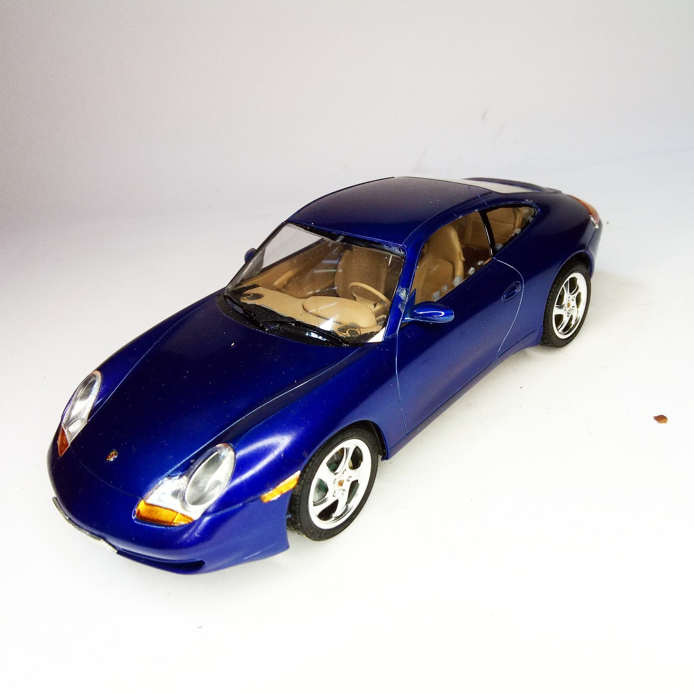
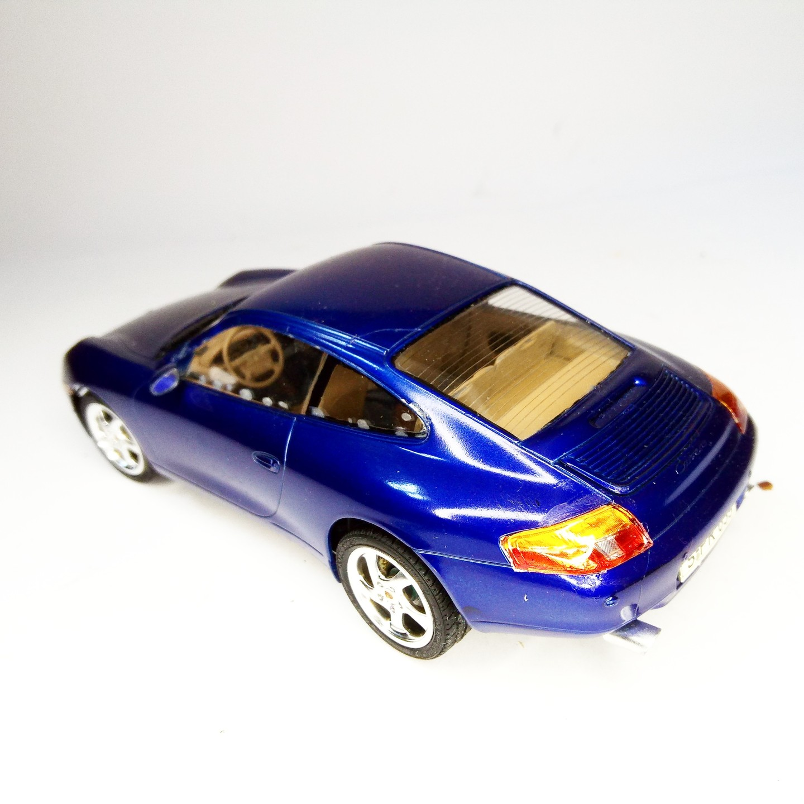

Auto e veicoli stradali · scale model archive
Porsche 911 996 Carrera
Porsche 911 996 Carrera — Kit: Tamiya. Scale; 1/24 Built 1998-2005 #1/24 #Tamiya #Porsche911

Photo gallery

English description
Scale; 1/24
Built 1998-2005
#1/24 #Tamiya #Porsche911
Descrizione italiana
Prodotta dal 1998 al 2005.